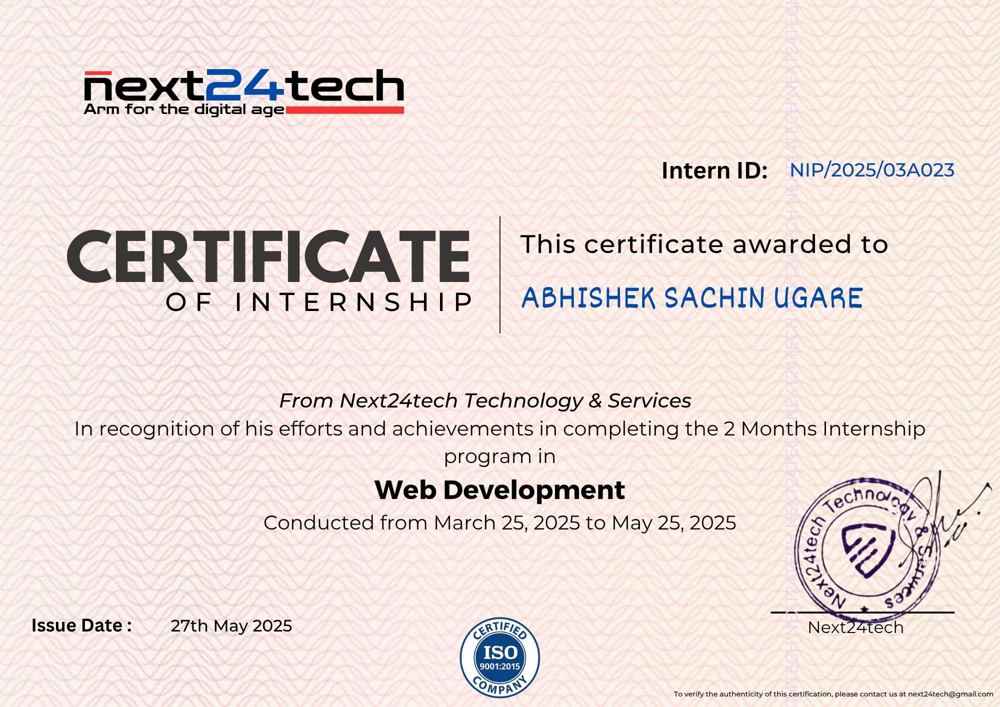
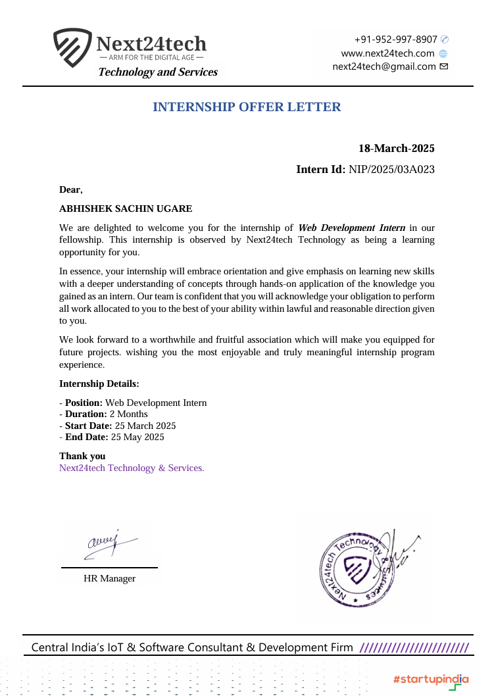
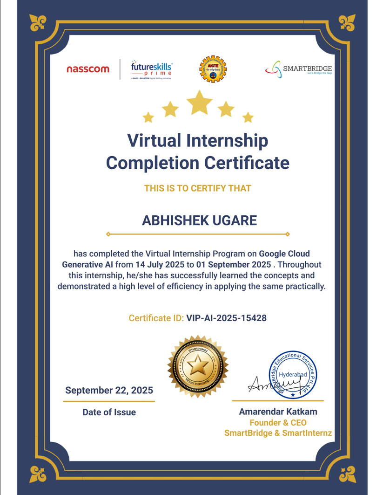
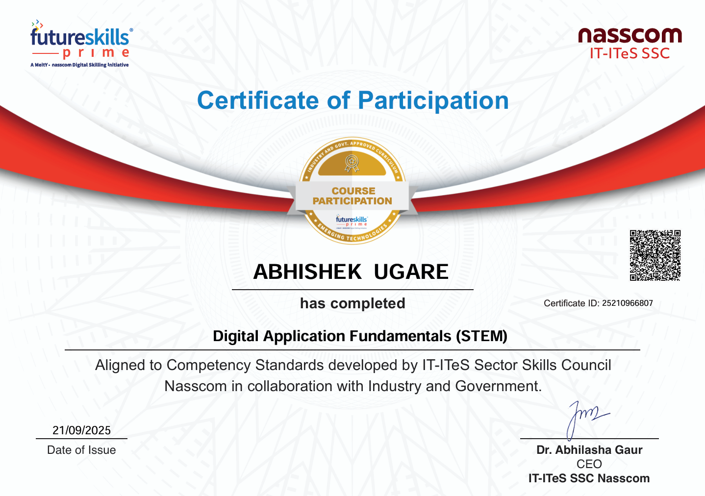
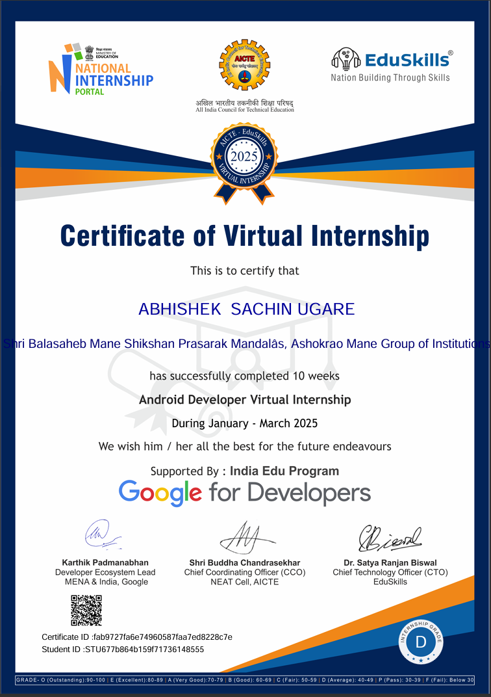
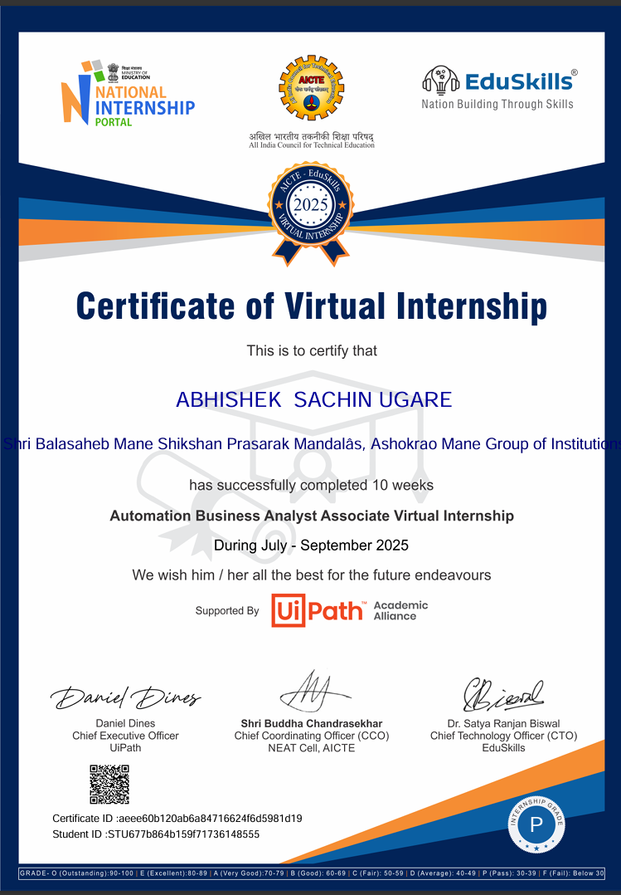
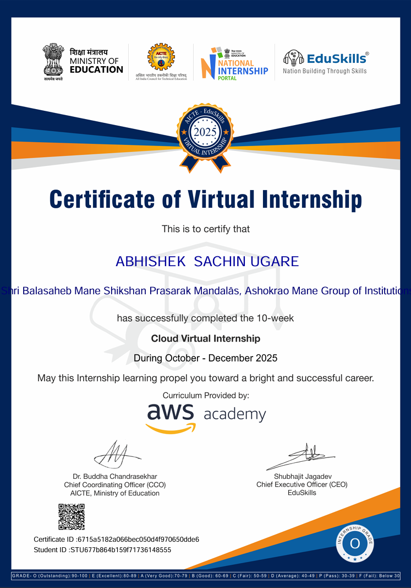
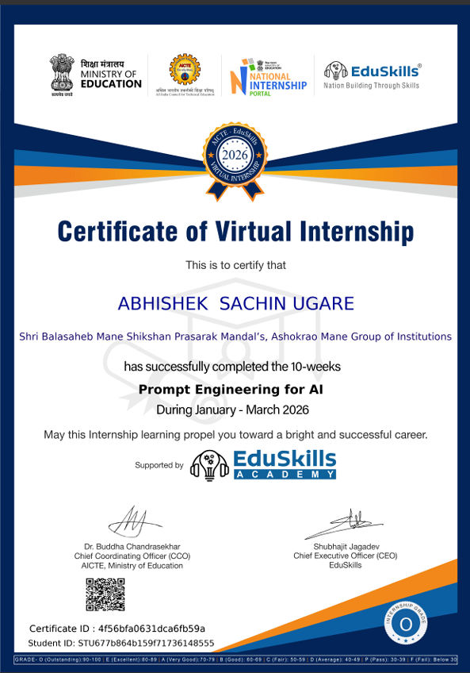
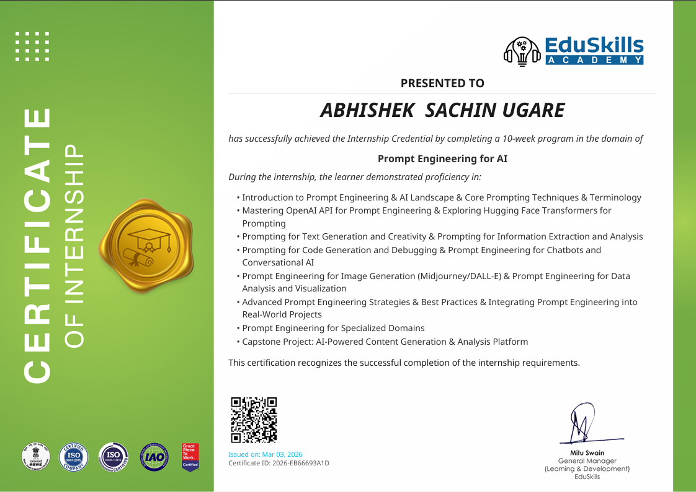

Internships
Tap an internship to expand details and certificates.
A 2-month Web Development Internship at Next24tech Technology & Services, conducted from 25 March 2025 to 25 May 2025. This internship was officially recognised and certified by the organisation, highlighting my dedication, learning ability, and practical contributions during the program. The certification reflects my consistent efforts, professional conduct, and technical growth throughout the internship period.
During my internship at Next24tech, I gained hands-on experience in web development, where I worked on real-world tasks that enhanced both my technical and problem-solving skills. I developed a strong understanding of frontend technologies such as HTML, CSS, and JavaScript, and learned how to structure responsive and user-friendly web pages.
I actively participated in building and improving web interfaces, understanding project workflows, and applying best practices in coding. This internship also helped me strengthen my logical thinking, debugging skills, and time management, while working in a professional environment.

Internship Certificate

Completion Letter
A Virtual Internship on Google Cloud Generative AI organised by SmartBridge & SmartInternz, in association with NASSCOM and FutureSkills Prime. This internship focused on building a strong foundation in Generative AI concepts and understanding how modern AI solutions are developed and deployed using cloud platforms like Google Cloud.
Through this program, I gained exposure to the fundamentals of artificial intelligence, machine learning, and generative models. The learning structure helped me understand how AI systems generate content, process data, and assist in decision-making across different domains.
During the internship, I worked through structured learning modules that covered Google Cloud fundamentals, Generative AI concepts, and real-world use cases. The program emphasised both theoretical understanding and practical learning, which helped me connect concepts with real applications.
I gained hands-on experience by applying the learned concepts through guided exercises and practical tasks. This improved my ability to understand AI workflows, data handling, and model interaction within a cloud environment. First time I was introduced to Google Notebook, database tools, and Generative AI.

Internship Certificate

Completion Badge
I completed three 10-week virtual internships under the National Internship Portal with support from AICTE, EduSkills, and industry partners like Google for Developers, UiPath Academic Alliance, and AWS Academy. These programs helped me build a strong foundation in Android development, business process automation, and cloud computing.
During these internships, I learned Android app development concepts such as architecture, UI design, and application flow using Android Studio. I explored Robotic Process Automation (RPA), including process analysis, workflow mapping, and automation using UiPath tools.
I also studied cloud computing fundamentals like service models, virtualisation, storage, networking, and AWS basics. These experiences improved my problem-solving skills, analytical thinking, and practical understanding of modern technologies.

Android Developer — Google

RPA Analyst — UiPath

Cloud — AWS Academy
I successfully completed a comprehensive training program in Prompt Engineering for Artificial Intelligence, where I learned how to design, structure, and optimise prompts to effectively interact with AI systems. This program introduced me to the core principles behind large language models and how prompt design directly impacts AI-generated outputs.
During the program, I learned key prompt engineering concepts such as zero-shot and few-shot prompting, role-based prompting, context structuring, output formatting control, instruction clarity, and iterative refinement. I understood how token usage, temperature settings, and model behaviour influence AI responses.
The training also helped me explore practical applications such as content generation, code assistance, data analysis support, and automation through AI tools. Through experimentation and continuous refinement, I improved my ability to generate precise, consistent, and high-quality AI outputs.

Prompt Engineering Certificate

Completion Badge